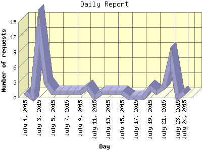

The Daily Report identifies the activity for each day within the reporting period. Remember that one page hit can result in several server requests as the images for each page are loaded.

| Day | Number of requests | Number of page requests | |
|---|---|---|---|
| 1. | July 1, 2015 | 1 | 1 |
| 2. | July 2, 2015 | 0 | 0 |
| 3. | July 3, 2015 | 14 | 4 |
| 4. | July 4, 2015 | 3 | 3 |
| 5. | July 5, 2015 | 1 | 1 |
| 6. | July 6, 2015 | 1 | 1 |
| 7. | July 7, 2015 | 1 | 1 |
| 8. | July 8, 2015 | 1 | 1 |
| 9. | July 9, 2015 | 1 | 1 |
| 10. | July 10, 2015 | 2 | 2 |
| 11. | July 11, 2015 | 0 | 0 |
| 12. | July 12, 2015 | 1 | 1 |
| 13. | July 13, 2015 | 1 | 1 |
| 14. | July 14, 2015 | 1 | 1 |
| 15. | July 15, 2015 | 1 | 1 |
| 16. | July 16, 2015 | 0 | 0 |
| 17. | July 17, 2015 | 0 | 0 |
| 18. | July 18, 2015 | 0 | 0 |
| 19. | July 19, 2015 | 2 | 2 |
| 20. | July 20, 2015 | 1 | 1 |
| 21. | July 21, 2015 | 2 | 2 |
| 22. | July 22, 2015 | 8 | 8 |
| 23. | July 23, 2015 | 0 | 0 |
| 24. | July 24, 2015 | 1 | 1 |
Most active day July 22, 2015 : 8 pages sent.
Daily average: 1 pages sent. 2 requests handled.
This report was generated on July 30, 2015 03:16.
Report time frame July 1, 2015 20:43 to July 24, 2015 14:59.
| Web statistics report produced by: analog 5.30 / Report Magic 2.15 |